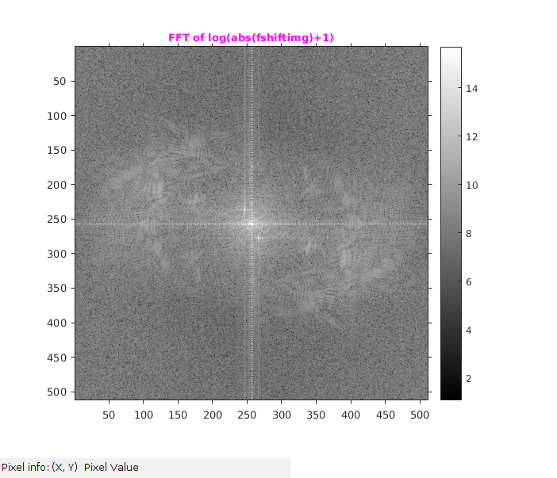

Assignment 5--3
CS-663 Group-163059009, 16305R011
Contents
Notch Filter
Inititalization
tic; file='../data/image_low_frequency_noise.mat'; l=load (file); img1=l.Z; figure('name','Original Image'); imshow(img1,[min(img1(:)),max(img1(:))]),colormap (gray); title('\fontsize{10}{\color{red}Original Image: Barbara}'); o1 = get(gca, 'Position'); colorbar(),set(gca, 'Position', o1); axis tight,axis on; toc
Elapsed time is 0.281541 seconds.

Zero padding
If Original image is of size H X W then image is Zero padded symmetrically to create a new image of size 2H X 2W
tic img=img1; [row,col]=size(img); imgPad=padarray(img,[ceil(row/2),ceil(col/2)],min(img(:)),'both'); figure('name','Padded Image1'); imshow(imgPad,[min(img(:)),max(img(:))]),colormap (gray); title('\fontsize{10}{\color{red}Barbara: Padded image}'); axis tight,axis on; impixelinfo; toc
Elapsed time is 0.303731 seconds.

Finding the Fourier Transform of the Image
tic fShiftImg = fftshift(fft2(imgPad)); absfimg = log(abs(fShiftImg)+1); figure('name','Fourier Transform'); imshow(absfimg,[min(absfimg(:)) max(absfimg(:))]),colormap (gray); colorbar; title('\fontsize{10}{\color{magenta}FFT of log(abs(fshiftimg)+1)}'); axis tight,axis on; impixelinfo; toc
Elapsed time is 0.375981 seconds.
Desiging Notch filter
A frequency domain Gaussian notch filter is created. It has size of 2H x 2W with the zero frequency at index (H,W) of the 2D filter array. Radius or interms of Gaussian its sigma set to 10 Center points are [237,247] & [278,268]. Found mannually by seeing the FT of the image.
tic radius=10; % sigma center={[237,247],[278,268]}; H=notchFilter(size(fShiftImg),center,radius); figure('name','Notch Filter'); imshow(H,[min(H(:)) max(H(:))]); colorbar; title('\fontsize{10}{\color{magenta} Notch Filter}'); axis tight,axis on; toc
Elapsed time is 0.790697 seconds.
Appliying Notch Filter on Fourier Shift of Image
G=fShiftImg.*H; absG = log(abs(G)+1); figure('name','FshitImg*Notch Filter'); imshow(absG,[min(absG(:)) max(absG(:))]); colorbar; title('\fontsize{10}{\color{magenta} Fourier Shift Image * Notch Filter }'); axis tight,axis on;
Filtered Image (Inverse Fourier Transform )
IFFT and then taking center portion
ifimg=ifft2(ifftshift(G)); img=abs(ifimg(129:383,129:383)); figure('name','Filtered Image'); imshow(img,[min(img(:)),max(img(:))]),daspect([1,1,1]); title('\fontsize{10}{\color{magenta}Barbara Filtered Image with Notch Filter applied}');o1 = get(gca, 'Position'); colorbar(),set(gca, 'Position', o1),axis tight,axis on;